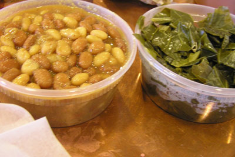

Cooked Slow & Ready to Go!
On the South Side
Our own homemade sides are the perfect complements to accompany our barbeque. All sides are Vegetarian friendly. Small (8oz); Large (16oz)
Collards- Hearty, full-flavored greens
Mimi's Jag (Rice & Beans)- My mom's traditional Portuguese-style recipe
3-Bean Baked Beans- Slow baked and rich, a flavorful combination
Mac & Cheese- Baked to a golden brown perfection
Idaho Fries- Hand-cut fresh and fried for the perfect crunch
Mashed Sweet Potatoes- Mashed with brown sugar, butter, and a touch of cinnamon
Slaw- Sweet & vinegary, perfect on, or besides your meat
Field Green Salad- Small version of our larger salad plate
Potato Salad- A creamy potato, egg and celery blend
Black Eyed Peas Salad- Peppers, onions with a mustard vinaigrette
Cornbread- Our own hearty Southern-style recipe- 1 piece or 4 pieces
Pickles- Crunchy cucumber chips- 8oz or 16oz
This is a picture of two of our 8oz sides: Baked Beans & Collard Greens!
SOS= Sauce on the Side- 8oz or 16oz
Real pit BBQ deserves a great sauce. That's why we only serve our award winning homemade sauces SOS.
Eastern Carolina Sauce- Our own peppery vinegar-based blend. This sauce placed 3rd in North Carolina BBQ convention in 2007!
Wilson's Own Sauce- Our tangy tomato-based recipe
Holy Chipotle Sauce- Our smoky tomato sauce with a spicy kick